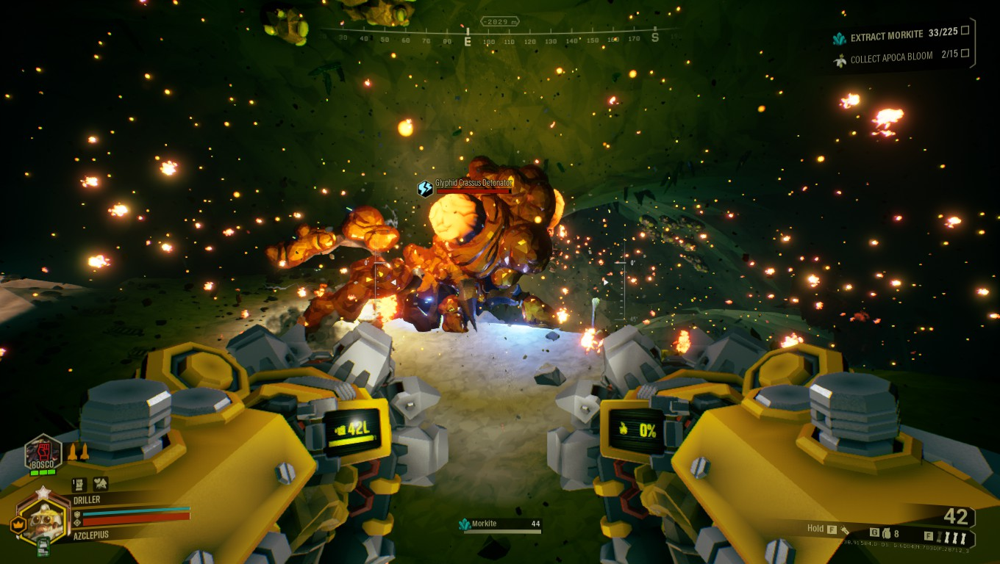

Deep Rock Galactic
Overview

Deep Rock Galactic is a 1–4 player co-op FPS where you play as a team of dwarves mining precious resources, battling alien creatures, and navigating hazardous cave systems—all while working for a cold, uncaring space-mining corporation.
Developed by Ghost Ship Games, Deep Rock Galactic started as a small indie release and evolved into one of the best examples of cooperative gameplay design in recent years. Its blend of teamwork, chaos, and humor earned it a dedicated fanbase—and it continues to grow through live updates and seasonal content.
But what makes this game dig so deep with players?
Let’s Split the Screen and break it down.

Mechanics
Each class brings distinct tools and abilities—from the Gunner’s shield to the Engineer’s platforms. The game’s systems are tightly interwoven: resource collection, terrain destruction, traversal, and combat all rely on coordination and class synergy. Loadouts and upgrades offer meaningful progression without overwhelming the core loop.

Challenge
Combat is intense but controlled—swarms of alien Glyphids, flying menaces, and cave hazards require quick decision-making. Difficulty scales smoothly with player count and mission level. Weapon feedback is satisfying, and class roles make every player feel essential in combat situations.

Level Design
Procedurally generated caves ensure no two missions are alike. Levels feel organic and unpredictable, yet carefully balanced. Verticality, destructible terrain, and environmental hazards—like acid pools or cave-ins—create dynamic traversal challenges that reinforce teamwork and class diversity.

User Interface
The UI is clean and stylized, with clear mission objectives, minimaps, and resource tracking. Loadout and perk systems are accessible, and mission selection through the Drop Pod interface is both functional and immersive. HUD elements are minimal but informative—perfect for co-op play.

Narrative Design
The story is light and mostly environmental, delivered through corporate messages, loading screens, and world flavor. But it works — the cynical tone and world-building are consistent and memorable. The satire of corporate exploitation layered over dwarf culture adds charm and humor without needing a deep plot.

Audio
Deep Rock’s sound design is both functional and immersive. Weapon sounds and alien screeches add intensity, while team callouts help coordinate gameplay. The music shifts between ambient and high-energy synths during swarm attacks, enhancing tension. Voice lines are iconic and add tons of personality.

Game Feel
Everything feels chunky, deliberate, and satisfying—from the crunch of digging through rock to the kick of a shotgun. Movement is smooth, and class tools like grappling hooks or drills make traversal feel empowering. Combat, mining, and even throwing flares feel tactile and rewarding.